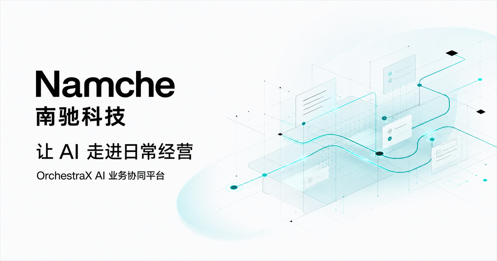
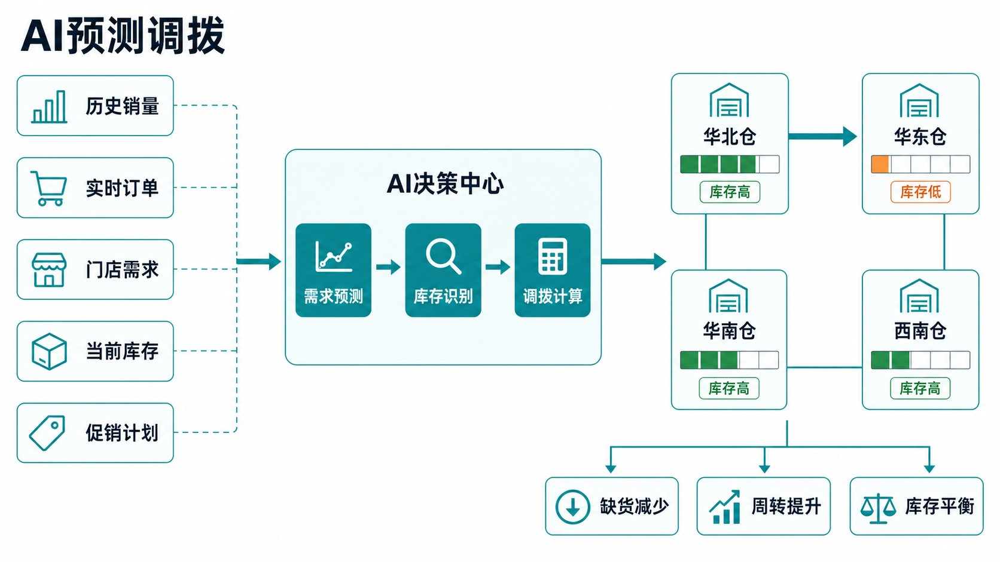
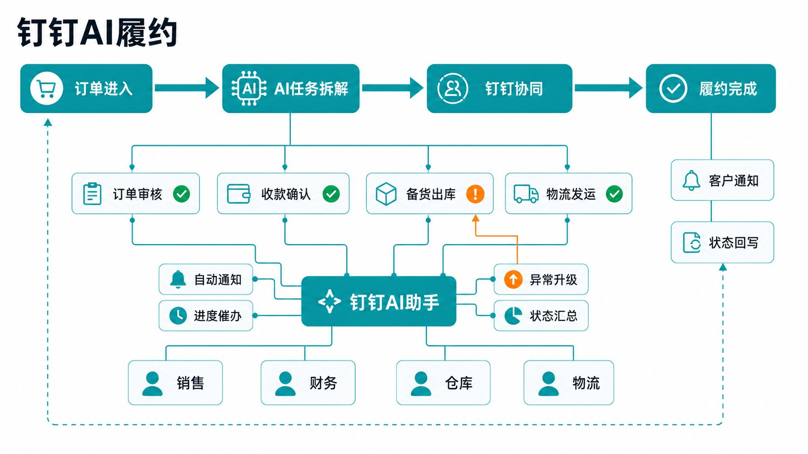
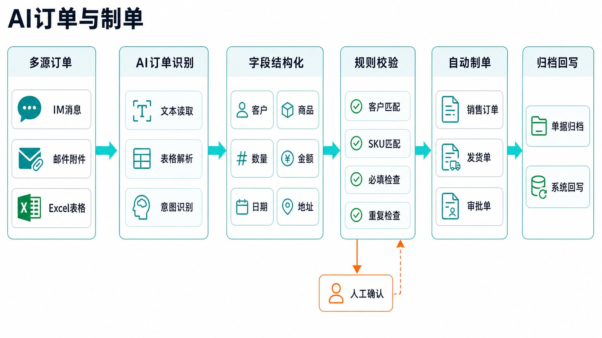

AI 智能报价
理解客户需求，匹配产品、价格、加工与成本规则，生成可追溯的报价草稿。
了解协同方式
OrchestraX 位于动态业务需求与结构化交易系统之间，统一承接任务、规则、人工确认和系统动作。
不只计算节省了多少时间，也验证收入、成本和费用是否得到真实改善。
提高商机转化、促销命中与渠道响应，让策略更快进入真实交易。
验证指标：转化率、促销命中、响应时效连接采购、库存、生产与物流，让业务判断更及时、更可执行。
验证指标：库存周转、交付时效、异常占比减少报价、制单、审核与对账，把人力投入客户与异常处理。
验证指标：人工处理率、单据耗时、返工率先验证业务价值，再连接更多系统、角色和场景，逐步沉淀企业自己的 AI 应用能力。
梳理业务目标与高频痛点，识别可快速落地的业务条件。
管理层共识与场景共创，形成分阶段的业务路线图。
快速搭建原型，用真实数据验证业务价值与落地边界。
在小范围真实运行中收集反馈，持续调整与优化。
扩展更多场景与系统，形成企业自己的 AI 应用能力。
以真实客户、真实流程和可验证指标，说明 AI 如何从概念进入企业日常经营。

AI 预测调拨

钉钉 AI 履约

AI 订单与制单
指标来自项目材料。配图为 AI 场景流程示意图。
用一次场景诊断，梳理业务目标、流程、数据、规则和优先级，确定第一阶段验证范围。
梳理业务目标与高频痛点，形成候选场景、优先级和下一步建议。
我们会尽快与你联系，进一步确认业务场景。当前页面为前端演示，正式上线前需接入表单接收接口。